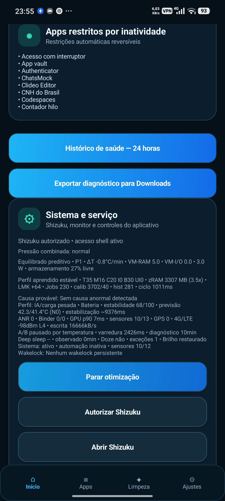
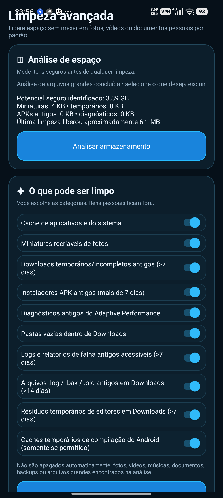
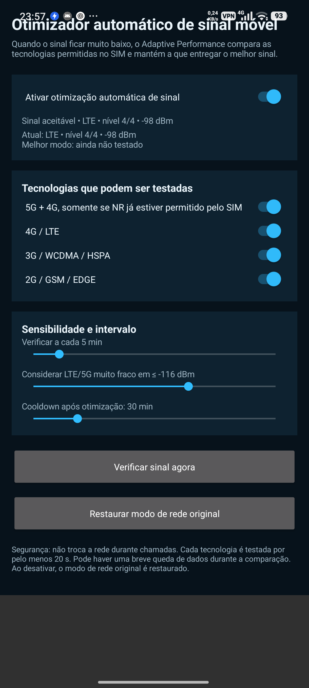

Adaptive Brain 2.0 learns device usage patterns, predicts heat and memory pressure, and puts safety first. Predictions can only skip optional preloading; they never freeze apps. Automatic mode retains reversible 30-minute tests, follow-up evidence and native Android thermal protection. Portuguese and English included.
Version 1.11.15: consolidated activity history, notification test, corrected inactivity restriction list, and heat-related freezing suggestions requiring explicit consent.

This build was compiled and installed for testing on Android 16 with Shizuku. UI and history were checked on-device, and a test notification was delivered. Battery-life gains and identification of the actual heat source have not been conclusively established.
Unified records for changes, maintenance, freezes and diagnostics, independent of ML effectiveness scoring. A full-history button is included.
Removes entries for uninstalled apps without changing surviving apps' restrictions. Shows the complete tracked list and scan status, excluding system apps from new restrictions.
Change and unresolved-issue alerts are no longer tuned by the battery-learning loop. A status panel detects a blocked Android channel, offers settings access and a test action.
Selected apps can be stopped after leaving the foreground, with safety exceptions protecting critical apps. Requires Shizuku.
Repeated high CPU use together with elevated temperature can prompt a freeze suggestion. Explicit approval is required; per-app heat itself is not measured.
Retains adaptive monitoring and avoids heavy scans during charging or high heat. Existing app preferences are preserved on upgrade.
Development-signed APK, versionCode 97. In-place upgrades require a matching signing certificate. Notification delivery depends on Android permission and channel settings; Shizuku support varies by device.
This update preserves Adaptive Brain 2.0 and fixes local learning-history persistence, makes CodeRabbit comment retrieval more accurate and stabilizes Android Lint in GitHub Actions. No additional always-on monitoring services.
Private on-device learning with safe decisions: no AI cloud required and no risky settings triggered by model predictions. Availability varies by Android, ROM, sensors and Shizuku.
Two tiny on-device Java models learn screen, CPU/RAM, battery, thermal and time patterns. Prediction-based decisions require at least 48 samples.
Learns common app transitions and only prioritizes a predicted app within an already safe recent-app shortlist. Does not launch apps.
Combines real hardware temperatures and Android thermal APIs with an illustrative five-minute trend. No synthetic status injection in automatic mode.
Displays battery temperature and reported charging current where available. Cannot change charger output power.
Projects available RAM over 10 minutes and avoids optional preloading under memory pressure.
Briefly samples the Adaptive Performance interface, without continuously profiling other apps.
Tracks its own CPU cost and reduces optional activity when needed.
Following a strong regression after preload, can suspend optional caching for six hours without changing user preferences.
Recognizes games, navigation, messages, social use and idle states to avoid unnecessary work.
Shows predictions, trials, reversions and diagnostics. Observational results do not prove battery savings.
ML starts in observation-only mode and needs at least 48 training samples. Sensors and advanced controls vary by device; battery gains are not guaranteed.
The app combines usage learning, thermal protection, memory management, and battery savings in an accessible interface while keeping technical controls available for manual tuning.
Records a 30-minute baseline and tests each reversible setting for 30 minutes. Only verified improvements are kept; regressions are rolled back.
Choose a minimum battery percentage and a target time. The app estimates an hourly power budget and adapts its savings.
Tracks temperature trends and applies gradual thermal protection to limit overheating.
Memory compression, thrashing protection, adaptive limits, and abnormal memory growth detection.
Deep sleep, Doze, wakeups, and background tasks are coordinated according to usage conditions.
When signal is weak, compares SIM-supported 5G, 4G, 3G, and 2G modes without switching networks during calls.
Limits background location updates with the screen off and restores settings when you resume use or connect the charger.
Tracks recent battery drain and estimates remaining runtime. Estimates are approximate and improve with use.
Every 15 minutes, identifies up to four recently used apps, preloads selected APK resources, and displays the current list.
Reduces preload, diagnostics, and maintenance budgets when the battery is low or the SoC and battery become hot.
Checks F2FS, GC, discard, and free-space changes hourly and requests maintenance only when needed while the device is idle.
Manual control over thermal behavior, CPU, memory, cleanup, freezing, diagnostics, and other modules.
With a battery target, the app tracks estimated usage. In Automatic mode, controlled tests compare power draw, CPU, RAM, temperature and responsiveness. Risky or irreversible operations are not included in automatic trials.
Actual project screenshots. Features and appearance may vary with Android version, manufacturer and permissions.


The optimizer confirms a weak signal in 10 seconds and tests each radio technology for 10 seconds. Default checks are every minute, with at least 5 minutes between optimization attempts.
Enable this in the signal optimizer. With the display off, the interval extends to 15 minutes; turning the screen on or charging restores the previous setting. Geofences and tracking may update later.
Adaptive Performance only tests network modes allowed by the SIM profile. Availability of 2G, 3G, 4G and 5G depends on the device, ROM and carrier.
Use the latest version published under Releases in this repository.
Allow the browser or file manager to install the APK when Android prompts you.
Some features work without Shizuku, but advanced controls need shell privileges.
Explore Automatic and Advanced modes and tailor the strategy to your device and routine.
Download Adaptive Performance 1.11.15Automated answers based on documentation. No phone access.